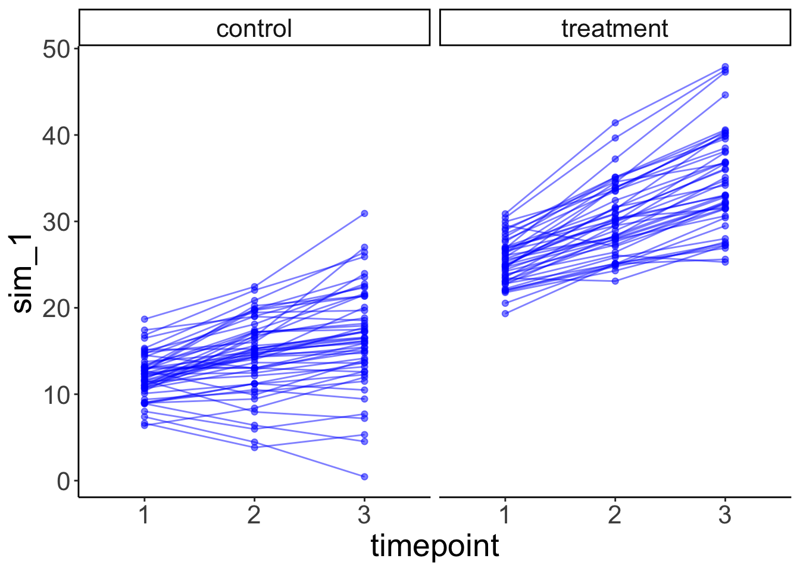

Chapter 4 Data wrangling 1
In this lecture, we will take a look at how to wrangle data using the dplyr package. Again, getting our data into shape is something we’ll need to do throughout the course, so it’s worth spending some time getting a good sense for how this works. The nice thing about R is that (thanks to the tidyverse), both visualization and data wrangling are particularly powerful.
4.1 Learning goals
- Review R basics (incl. variable modes, data types, operators, control flow, and functions).
- Learn how the pipe operator
%>%works. - See different ways for getting a sense of one’s data.
- Master key data manipulation verbs from the
dplyrpackage (incl.filter(),arrange(),rename(),relocate(),select(),mutate()) as well as the helper functionsacross()andwhere().
4.2 Install packages
install.packages(c("skimr", "visdat", "summarytools", "DT"))4.3 Load packages
Let’s first load the packages that we need for this chapter.
library("knitr") # for rendering the RMarkdown file
library("skimr") # for visualizing data
library("visdat") # for visualizing data
library("summarytools") # for visualizing data
library("DT") # for visualizing data
library("tidyverse") # for data wrangling4.4 Some R basics
To test your knowledge of the R basics, I recommend taking the free interactive tutorial on datacamp: Introduction to R. Here, I will just give a very quick overview of some of the basics.
4.4.1 Modes
Variables in R can have different modes. Table 4.1 shows the most common ones.
| name | example |
|---|---|
| numeric | 1, 3, 48 |
| character | 'Steve', 'a', '78' |
| logical | TRUE, FALSE |
| not available | NA |
For characters you can either use " or '. R has a number of functions to convert a variable from one mode to another. NA is used for missing values.
tmp1 = "1" # we start with a character
str(tmp1) ## chr "1"tmp2 = as.numeric(tmp1) # turn it into a numeric
str(tmp2) ## num 1tmp3 = as.factor(tmp2) # turn that into a factor
str(tmp3)## Factor w/ 1 level "1": 1tmp4 = as.character(tmp3) # and go full cycle by turning it back into a character
str(tmp4)## chr "1"identical(tmp1, tmp4) # checks whether tmp1 and tmp4 are the same## [1] TRUEThe str() function displays the structure of an R object. Here, it shows us what mode the variable is.
4.4.2 Data types
R has a number of different data types. Table 4.2 shows the ones you’re most likely to come across (taken from this source):
| name | description |
|---|---|
| vector | list of values with of the same variable mode |
| factor | for ordinal variables |
| matrix | 2D data structure |
| array | same as matrix for higher dimensional data |
| data frame | similar to matrix but with column names |
| list | flexible type that can contain different other variable types |
4.4.2.1 Vectors
We build vectors using the concatenate function c(), and we use [] to access one or more elements of a vector.
numbers = c(1, 4, 5) # make a vector
numbers[2] # access the second element ## [1] 4numbers[1:2] # access the first two elements## [1] 1 4numbers[c(1, 3)] # access the first and last element## [1] 1 5In R (unlike in Python for example), 1 refers to the first element of a vector (or list).
4.4.2.2 Matrix
We build a matrix using the matrix() function, and we use [] to access its elements.
matrix = matrix(data = c(1, 2, 3, 4, 5, 6),
nrow = 3,
ncol = 2)
matrix # the full matrix## [,1] [,2]
## [1,] 1 4
## [2,] 2 5
## [3,] 3 6matrix[1, 2] # element in row 1, column 2## [1] 4matrix[1, ] # all elements in the first row ## [1] 1 4matrix[ , 1] # all elements in the first column ## [1] 1 2 3matrix[-1, ] # a matrix which excludes the first row## [,1] [,2]
## [1,] 2 5
## [2,] 3 6Note how we use an empty placeholder to indicate that we want to select all the values in a row or column, and - to indicate that we want to remove something.
4.4.2.3 Array
Arrays work the same was as matrices with data of more than two dimensions.
4.4.2.4 Data frame
df = tibble(participant_id = c(1, 2, 3),
participant_name = c("Leia", "Luke", "Darth")) # make the data frame
df # the complete data frame## # A tibble: 3 x 2
## participant_id participant_name
## <dbl> <chr>
## 1 1 Leia
## 2 2 Luke
## 3 3 Darthdf[1, 2] # a single element using numbers ## # A tibble: 1 x 1
## participant_name
## <chr>
## 1 Leiadf$participant_id # all participants ## [1] 1 2 3df[["participant_id"]] # same as before but using [[]] instead of $## [1] 1 2 3df$participant_name[2] # name of the second participant## [1] "Luke"df[["participant_name"]][2] # same as above## [1] "Luke"We’ll use data frames a lot. Data frames are like a matrix with column names. Data frames are also more general than matrices in that different columns can have different modes. For example, one column might be a character, another one numeric, and another one a factor.
Here we used the tibble() function to create the data frame. A tibble is almost the same as a data frame but it has better defaults for formatting output in the console (more information on tibbles is here).
4.4.2.5 Lists
l.mixed = list(number = 1,
character = "2",
factor = factor(3),
matrix = matrix(1:4, ncol = 2),
df = tibble(x = c(1, 2), y = c(3, 4)))
l.mixed## $number
## [1] 1
##
## $character
## [1] "2"
##
## $factor
## [1] 3
## Levels: 3
##
## $matrix
## [,1] [,2]
## [1,] 1 3
## [2,] 2 4
##
## $df
## # A tibble: 2 x 2
## x y
## <dbl> <dbl>
## 1 1 3
## 2 2 4# three different ways of accessing a list
l.mixed$character## [1] "2"l.mixed[["character"]]## [1] "2"l.mixed[[2]] ## [1] "2"Lists are a very flexible data format. You can put almost anything in a list.
4.4.3 Operators
Table 4.3 shows the comparison operators that result in logical outputs.
| symbol | name |
|---|---|
== |
equal to |
!= |
not equal to |
>, < |
greater/less than |
>=, <= |
greater/less than or equal |
&, |, ! |
logical operators: and, or, not |
%in% |
checks whether an element is in an object |
The %in% operator is very useful, and we can use it like so:
x = c(1, 2, 3)
2 %in% x ## [1] TRUEc(3, 4) %in% x## [1] TRUE FALSEIt’s particularly useful for filtering data as we will see below.
4.4.4 Control flow
4.4.4.1 if-then
number = 3
if (number == 1) {
print("The number is 1.")
} else if (number == 2) {
print("The number is 2.")
} else {
print("The number is neither 1 nor 2.")
}## [1] "The number is neither 1 nor 2."As a shorthand version, we can also use the ifelse() function like so:
number = 3
ifelse(test = number == 1, yes = "correct", no = "false")## [1] "false"4.4.4.2 for loop
sequence = 1:10
for(i in 1:length(sequence)){
print(i)
}## [1] 1
## [1] 2
## [1] 3
## [1] 4
## [1] 5
## [1] 6
## [1] 7
## [1] 8
## [1] 9
## [1] 104.4.4.3 while loop
number = 1
while(number <= 10){
print(number)
number = number + 1
}## [1] 1
## [1] 2
## [1] 3
## [1] 4
## [1] 5
## [1] 6
## [1] 7
## [1] 8
## [1] 9
## [1] 104.4.5 Functions
fun.add_two_numbers = function(a, b){
x = a + b
return(str_c("The result is ", x))
}
fun.add_two_numbers(1, 2)## [1] "The result is 3"I’ve used the str_c() function here to concatenate the string with the number. (R converts the number x into a string for us.) Note, R functions can only return a single object. However, this object can be a list (which can contain anything).
4.4.5.1 Some often used functions
| name | description |
|---|---|
length() |
length of an object |
dim() |
dimensions of an object (e.g. number of rows and columns) |
rm() |
remove an object |
seq() |
generate a sequence of numbers |
rep() |
repeat something n times |
max() |
maximum |
min() |
minimum |
which.max() |
index of the maximum |
which.min() |
index of the maximum |
mean() |
mean |
median() |
median |
sum() |
sum |
var() |
variance |
sd() |
standard deviation |
4.4.6 The pipe operator %>%

Figure 4.1: Inspiration for the magrittr package name.

Figure 4.2: The magrittr package logo.
The pipe operator %>% is a special operator introduced in the magrittr package. It is used heavily in the tidyverse. The basic idea is simple: this operator allows us to “pipe” several functions into one long chain that matches the order in which we want to do stuff.
Let’s consider the following example of making and eating a cake (thanks to https://twitter.com/dmi3k/status/1191824875842879489?s=09). This would be the traditional way of writing some code:
eat(
slice(
bake(
put(
pour(
mix(ingredients),
into = baking_form),
into = oven),
time = 30),
pieces = 6,
1)
)To see what’s going on here, we need to read the code inside out. That is, we have to start in the innermost bracket, and then work our way outward. However, there is a natural causal ordering to these steps and wouldn’t it be nice if we could just write code in that order? Thanks to the pipe operator %>% we can! Here is the same example using the pipe:
ingredients %>%
mix %>%
pour(into = baking_form) %>%
put(into = oven) %>%
bake(time = 30) %>%
slice(pieces = 6) %>%
eat(1)This code is much easier to read and write, since it represents the order in which we want to do things!
Abstractly, the pipe operator does the following:
f(x)can be rewritten asx %>% f()
For example, in standard R, we would write:
x = 1:3
# standard R
sum(x)## [1] 6With the pipe, we can rewrite this as:
x = 1:3
# with the pipe
x %>% sum()## [1] 6This doesn’t seem super useful yet, but just hold on a little longer.
f(x, y)can be rewritten asx %>% f(y)
So, we could rewrite the following standard R code …
# rounding pi to 6 digits, standard R
round(pi, digits = 6)## [1] 3.141593… by using the pipe:
# rounding pi to 6 digits, standard R
pi %>% round(digits = 6)## [1] 3.141593Here is another example:
a = 3
b = 4
sum(a, b) # standard way ## [1] 7a %>% sum(b) # the pipe way ## [1] 7The pipe operator inserts the result of the previous computation as a first element into the next computation. So, a %>% sum(b) is equivalent to sum(a, b). We can also specify to insert the result at a different position via the . operator. For example:
a = 1
b = 10
b %>% seq(from = a, to = .)## [1] 1 2 3 4 5 6 7 8 9 10Here, I used the . operator to specify that I woud like to insert the result of b where I’ve put the . in the seq() function.
f(x, y)can be rewritten asy %>% f(x, .)
Still not to thrilled about the pipe? We can keep going though (and I’m sure you’ll be convinced eventually.)
h(g(f(x)))can be rewritten asx %>% f() %>% g() %>% h()
For example, consider that we want to calculate the root mean squared error (RMSE) between prediction and data.
Here is how the RMSE is defined:
\[ \text{RMSE} = \sqrt\frac{\sum_{i=1}^n(\hat{y}_i-y_i)^2}{n} \] where \(\hat{y}_i\) denotes the prediction, and \(y_i\) the actually observed value.
In base R, we would do the following.
data = c(1, 3, 4, 2, 5)
prediction = c(1, 2, 2, 1, 4)
# calculate root mean squared error
rmse = sqrt(mean((prediction-data)^2))
print(rmse)## [1] 1.183216Using the pipe operator makes the operation more intuitive:
data = c(1, 3, 4, 2, 5)
prediction = c(1, 2, 2, 1, 4)
# calculate root mean squared error the pipe way
rmse = (prediction-data)^2 %>%
mean() %>%
sqrt() %>%
print() ## [1] 1.183216First, we calculate the squared error, then we take the mean, then the square root, and then print the result.
The pipe operator %>% is similar to the + used in ggplot2. It allows us to take step-by-step actions in a way that fits the causal ordering of how we want to do things.
Tip: The keyboard shortcut for the pipe operator is:
cmd/ctrl + shift + m
Definitely learn this one – we’ll use the pipe a lot!!
Tip: Code is generally easier to read when the pipe
%>%is at the end of a line (just like the+inggplot2).
A key advantage of using the pipe is that you don’t have to save intermediate computations as new variables and this helps to keep your environment nice and clean!
4.4.6.1 Practice 1
Let’s practice the pipe operator.
# here are some numbers
x = seq(from = 1, to = 5, by = 1)
# taking the log the standard way
log(x)## [1] 0.0000000 0.6931472 1.0986123 1.3862944 1.6094379# now take the log the pipe way (write your code underneath)# some more numbers
x = seq(from = 10, to = 5, by = -1)
# the standard way
mean(round(sqrt(x), digits = 2))## [1] 2.721667# the pipe way (write your code underneath)4.5 A quick note on naming things
Personally, I like to name things in a (pretty) consistent way so that I have no trouble finding stuff even when I open up a project that I haven’t worked on for a while. I try to use the following naming conventions:
| name | use |
|---|---|
| df.thing | for data frames |
| l.thing | for lists |
| fun.thing | for functions |
| tmp.thing | for temporary variables |
4.6 Looking at data
The package dplyr which we loaded as part of the tidyverse, includes a data set with information about starwars characters. Let’s store this as df.starwars.
df.starwars = starwarsNote: Unlike in other languages (such as Python or Matlab), a
.in a variable name has no special meaning and can just be used as part of the name. I’ve useddfhere to indicate for myself that this variable is a data frame. Before visualizing the data, it’s often useful to take a quick direct look at the data.
There are several ways of taking a look at data in R. Personally, I like to look at the data within RStudio’s data viewer. To do so, you can:
- click on the
df.starwarsvariable in the “Environment” tab
- type
View(df.starwars)in the console - move your mouse over (or select) the variable in the editor (or console) and hit
F2
I like the F2 route the best as it’s fast and flexible.
Sometimes it’s also helpful to look at data in the console instead of the data viewer. Particularly when the data is very large, the data viewer can be sluggish.
Here are some useful functions:
4.6.1 head()
Without any extra arguments specified, head() shows the top six rows of the data.
head(df.starwars)## # A tibble: 6 x 14
## name height mass hair_color skin_color eye_color birth_year sex gender
## <chr> <int> <dbl> <chr> <chr> <chr> <dbl> <chr> <chr>
## 1 Luke… 172 77 blond fair blue 19 male mascu…
## 2 C-3PO 167 75 <NA> gold yellow 112 none mascu…
## 3 R2-D2 96 32 <NA> white, bl… red 33 none mascu…
## 4 Dart… 202 136 none white yellow 41.9 male mascu…
## 5 Leia… 150 49 brown light brown 19 fema… femin…
## 6 Owen… 178 120 brown, gr… light blue 52 male mascu…
## # … with 5 more variables: homeworld <chr>, species <chr>, films <list>,
## # vehicles <list>, starships <list>4.6.2 glimpse()
glimpse() is helpful when the data frame has many columns. The data is shown in a transposed way with columns as rows.
glimpse(df.starwars)## Rows: 87
## Columns: 14
## $ name <chr> "Luke Skywalker", "C-3PO", "R2-D2", "Darth Vader", "Leia O…
## $ height <int> 172, 167, 96, 202, 150, 178, 165, 97, 183, 182, 188, 180, …
## $ mass <dbl> 77.0, 75.0, 32.0, 136.0, 49.0, 120.0, 75.0, 32.0, 84.0, 77…
## $ hair_color <chr> "blond", NA, NA, "none", "brown", "brown, grey", "brown", …
## $ skin_color <chr> "fair", "gold", "white, blue", "white", "light", "light", …
## $ eye_color <chr> "blue", "yellow", "red", "yellow", "brown", "blue", "blue"…
## $ birth_year <dbl> 19.0, 112.0, 33.0, 41.9, 19.0, 52.0, 47.0, NA, 24.0, 57.0,…
## $ sex <chr> "male", "none", "none", "male", "female", "male", "female"…
## $ gender <chr> "masculine", "masculine", "masculine", "masculine", "femin…
## $ homeworld <chr> "Tatooine", "Tatooine", "Naboo", "Tatooine", "Alderaan", "…
## $ species <chr> "Human", "Droid", "Droid", "Human", "Human", "Human", "Hum…
## $ films <list> [<"The Empire Strikes Back", "Revenge of the Sith", "Retu…
## $ vehicles <list> [<"Snowspeeder", "Imperial Speeder Bike">, <>, <>, <>, "I…
## $ starships <list> [<"X-wing", "Imperial shuttle">, <>, <>, "TIE Advanced x1…4.6.3 distinct()
distinct() shows all the distinct values for a character or factor column.
df.starwars %>%
distinct(species)## # A tibble: 38 x 1
## species
## <chr>
## 1 Human
## 2 Droid
## 3 Wookiee
## 4 Rodian
## 5 Hutt
## 6 Yoda's species
## 7 Trandoshan
## 8 Mon Calamari
## 9 Ewok
## 10 Sullustan
## # … with 28 more rows4.6.4 count()
count() shows a count of all the different distinct values in a column.
df.starwars %>%
count(eye_color)## # A tibble: 15 x 2
## eye_color n
## <chr> <int>
## 1 black 10
## 2 blue 19
## 3 blue-gray 1
## 4 brown 21
## 5 dark 1
## 6 gold 1
## 7 green, yellow 1
## 8 hazel 3
## 9 orange 8
## 10 pink 1
## 11 red 5
## 12 red, blue 1
## 13 unknown 3
## 14 white 1
## 15 yellow 11It’s possible to do grouped counts by combining several variables.
df.starwars %>%
count(eye_color, gender) %>%
head(n = 10)## # A tibble: 10 x 3
## eye_color gender n
## <chr> <chr> <int>
## 1 black feminine 2
## 2 black masculine 8
## 3 blue feminine 6
## 4 blue masculine 12
## 5 blue <NA> 1
## 6 blue-gray masculine 1
## 7 brown feminine 5
## 8 brown masculine 15
## 9 brown <NA> 1
## 10 dark masculine 14.6.5 datatable()
For RMardkown files specifically, we can use the datatable() function from the DT package to get an interactive table widget.
df.starwars %>%
DT::datatable()4.6.6 Other tools for taking a quick look at data
4.6.6.1 vis_dat()
The vis_dat() function from the visdat package, gives a visual summary that makes it easy to see the variable types and whether there are missing values in the data.
visdat::vis_dat(df.starwars)
When R loads packages, functions loaded in earlier packages are overwritten by functions of the same name from later packages. This means that the order in which packages are loaded matters. To make sure that a function from the correct package is used, you can use the package_name::function_name() construction. This way, the function_name() from the package_name is used, rather than the same function from a different package.
This is why, in general, I recommend to load the tidyverse package last (since it contains a large number of functions that we use a lot).
4.6.6.2 skim()
The skim() function from the skimr package provides a nice overview of the data, separated by variable types.
# install.packages("skimr")
skimr::skim(df.starwars)| Name | df.starwars |
| Number of rows | 87 |
| Number of columns | 14 |
| _______________________ | |
| Column type frequency: | |
| character | 8 |
| list | 3 |
| numeric | 3 |
| ________________________ | |
| Group variables | None |
Variable type: character
| skim_variable | n_missing | complete_rate | min | max | empty | n_unique | whitespace |
|---|---|---|---|---|---|---|---|
| name | 0 | 1.00 | 3 | 21 | 0 | 87 | 0 |
| hair_color | 5 | 0.94 | 4 | 13 | 0 | 12 | 0 |
| skin_color | 0 | 1.00 | 3 | 19 | 0 | 31 | 0 |
| eye_color | 0 | 1.00 | 3 | 13 | 0 | 15 | 0 |
| sex | 4 | 0.95 | 4 | 14 | 0 | 4 | 0 |
| gender | 4 | 0.95 | 8 | 9 | 0 | 2 | 0 |
| homeworld | 10 | 0.89 | 4 | 14 | 0 | 48 | 0 |
| species | 4 | 0.95 | 3 | 14 | 0 | 37 | 0 |
Variable type: list
| skim_variable | n_missing | complete_rate | n_unique | min_length | max_length |
|---|---|---|---|---|---|
| films | 0 | 1 | 24 | 1 | 7 |
| vehicles | 0 | 1 | 11 | 0 | 2 |
| starships | 0 | 1 | 17 | 0 | 5 |
Variable type: numeric
| skim_variable | n_missing | complete_rate | mean | sd | p0 | p25 | p50 | p75 | p100 | hist |
|---|---|---|---|---|---|---|---|---|---|---|
| height | 6 | 0.93 | 174.36 | 34.77 | 66 | 167.0 | 180 | 191.0 | 264 | ▁▁▇▅▁ |
| mass | 28 | 0.68 | 97.31 | 169.46 | 15 | 55.6 | 79 | 84.5 | 1358 | ▇▁▁▁▁ |
| birth_year | 44 | 0.49 | 87.57 | 154.69 | 8 | 35.0 | 52 | 72.0 | 896 | ▇▁▁▁▁ |
4.6.6.3 dfSummary()
The summarytools package is another great package for taking a look at the data. It renders a nice html output for the data frame including a lot of helpful information. You can find out more about this package here.
df.starwars %>%
select(where(~ !is.list(.))) %>% # this removes all list columns
summarytools::dfSummary() %>%
summarytools::view()Note: The summarytools::view() function will not show up here in the html. It generates a summary of the data that is displayed in the Viewer in RStudio.
Once we’ve taken a look at the data, the next step would be to visualize relationships between variables of interest.
4.7 Wrangling data
We use the functions in the package dplyr to manipulate our data.
4.7.1 filter()
filter() lets us apply logical (and other) operators (see Table 4.3) to subset the data. Here, I’ve filtered out the masculine characters.
df.starwars %>%
filter(gender == "masculine")## # A tibble: 66 x 14
## name height mass hair_color skin_color eye_color birth_year sex gender
## <chr> <int> <dbl> <chr> <chr> <chr> <dbl> <chr> <chr>
## 1 Luke… 172 77 blond fair blue 19 male mascu…
## 2 C-3PO 167 75 <NA> gold yellow 112 none mascu…
## 3 R2-D2 96 32 <NA> white, bl… red 33 none mascu…
## 4 Dart… 202 136 none white yellow 41.9 male mascu…
## 5 Owen… 178 120 brown, gr… light blue 52 male mascu…
## 6 R5-D4 97 32 <NA> white, red red NA none mascu…
## 7 Bigg… 183 84 black light brown 24 male mascu…
## 8 Obi-… 182 77 auburn, w… fair blue-gray 57 male mascu…
## 9 Anak… 188 84 blond fair blue 41.9 male mascu…
## 10 Wilh… 180 NA auburn, g… fair blue 64 male mascu…
## # … with 56 more rows, and 5 more variables: homeworld <chr>, species <chr>,
## # films <list>, vehicles <list>, starships <list>We can combine multiple conditions in the same call. Here, I’ve filtered out masculine characters, whose height is greater than the median height (i.e. they are in the top 50 percentile), and whose mass was not NA.
df.starwars %>%
filter(gender == "masculine",
height > median(height, na.rm = T),
!is.na(mass))## # A tibble: 27 x 14
## name height mass hair_color skin_color eye_color birth_year sex gender
## <chr> <int> <dbl> <chr> <chr> <chr> <dbl> <chr> <chr>
## 1 Dart… 202 136 none white yellow 41.9 male mascu…
## 2 Bigg… 183 84 black light brown 24 male mascu…
## 3 Obi-… 182 77 auburn, w… fair blue-gray 57 male mascu…
## 4 Anak… 188 84 blond fair blue 41.9 male mascu…
## 5 Chew… 228 112 brown unknown blue 200 male mascu…
## 6 Boba… 183 78.2 black fair brown 31.5 male mascu…
## 7 IG-88 200 140 none metal red 15 none mascu…
## 8 Bossk 190 113 none green red 53 male mascu…
## 9 Qui-… 193 89 brown fair blue 92 male mascu…
## 10 Nute… 191 90 none mottled g… red NA male mascu…
## # … with 17 more rows, and 5 more variables: homeworld <chr>, species <chr>,
## # films <list>, vehicles <list>, starships <list>Many functions like mean(), median(), var(), sd(), sum() have the argument na.rm which is set to FALSE by default. I set the argument to TRUE here (or T for short), which means that the NA values are ignored, and the median() is calculated based on the remaining values.
You can use , and & interchangeably in filter(). Make sure to use parentheses when combining several logical operators to indicate which logical operation should be performed first:
df.starwars %>%
filter((skin_color %in% c("dark", "pale") | gender == "hermaphrodite") & height > 170)## # A tibble: 9 x 14
## name height mass hair_color skin_color eye_color birth_year sex gender
## <chr> <int> <dbl> <chr> <chr> <chr> <dbl> <chr> <chr>
## 1 Land… 177 79 black dark brown 31 male mascu…
## 2 Quar… 183 NA black dark brown 62 <NA> <NA>
## 3 Bib … 180 NA none pale pink NA male mascu…
## 4 Mace… 188 84 none dark brown 72 male mascu…
## 5 Ki-A… 198 82 white pale yellow 92 male mascu…
## 6 Adi … 184 50 none dark blue NA fema… femin…
## 7 Saes… 188 NA none pale orange NA male mascu…
## 8 Greg… 185 85 black dark brown NA male mascu…
## 9 Sly … 178 48 none pale white NA <NA> <NA>
## # … with 5 more variables: homeworld <chr>, species <chr>, films <list>,
## # vehicles <list>, starships <list>The starwars characters that have either a "dark" or a "pale" skin tone, or whose gender is "hermaphrodite", and whose height is at least 170 cm. The %in% operator is useful when there are multiple options. Instead of skin_color %in% c("dark", "pale"), I could have also written skin_color == "dark" | skin_color == "pale" but this gets cumbersome as the number of options increases.
4.7.2 arrange()
arrange() allows us to sort the values in a data frame by one or more column entries.
df.starwars %>%
arrange(hair_color, desc(height))## # A tibble: 87 x 14
## name height mass hair_color skin_color eye_color birth_year sex gender
## <chr> <int> <dbl> <chr> <chr> <chr> <dbl> <chr> <chr>
## 1 Mon … 150 NA auburn fair blue 48 fema… femin…
## 2 Wilh… 180 NA auburn, g… fair blue 64 male mascu…
## 3 Obi-… 182 77 auburn, w… fair blue-gray 57 male mascu…
## 4 Bail… 191 NA black tan brown 67 male mascu…
## 5 Greg… 185 85 black dark brown NA male mascu…
## 6 Bigg… 183 84 black light brown 24 male mascu…
## 7 Boba… 183 78.2 black fair brown 31.5 male mascu…
## 8 Quar… 183 NA black dark brown 62 <NA> <NA>
## 9 Jang… 183 79 black tan brown 66 male mascu…
## 10 Land… 177 79 black dark brown 31 male mascu…
## # … with 77 more rows, and 5 more variables: homeworld <chr>, species <chr>,
## # films <list>, vehicles <list>, starships <list>Here, I’ve sorted the data frame first by hair_color, and then by height. I’ve used the desc() function to sort height in descending order. Bail Prestor Organa is the tallest black character in starwars.
4.7.3 rename()
rename() renames column names.
df.starwars %>%
rename(person = name,
mass_kg = mass)## # A tibble: 87 x 14
## person height mass_kg hair_color skin_color eye_color birth_year sex gender
## <chr> <int> <dbl> <chr> <chr> <chr> <dbl> <chr> <chr>
## 1 Luke … 172 77 blond fair blue 19 male mascu…
## 2 C-3PO 167 75 <NA> gold yellow 112 none mascu…
## 3 R2-D2 96 32 <NA> white, bl… red 33 none mascu…
## 4 Darth… 202 136 none white yellow 41.9 male mascu…
## 5 Leia … 150 49 brown light brown 19 fema… femin…
## 6 Owen … 178 120 brown, gr… light blue 52 male mascu…
## 7 Beru … 165 75 brown light blue 47 fema… femin…
## 8 R5-D4 97 32 <NA> white, red red NA none mascu…
## 9 Biggs… 183 84 black light brown 24 male mascu…
## 10 Obi-W… 182 77 auburn, w… fair blue-gray 57 male mascu…
## # … with 77 more rows, and 5 more variables: homeworld <chr>, species <chr>,
## # films <list>, vehicles <list>, starships <list>The new variable names goes on the LHS of the= sign, and the old name on the RHS.
To rename all variables at the same time use rename_with():
df.starwars %>%
rename_with(.fn = ~ toupper(.))## # A tibble: 87 x 14
## NAME HEIGHT MASS HAIR_COLOR SKIN_COLOR EYE_COLOR BIRTH_YEAR SEX GENDER
## <chr> <int> <dbl> <chr> <chr> <chr> <dbl> <chr> <chr>
## 1 Luke… 172 77 blond fair blue 19 male mascu…
## 2 C-3PO 167 75 <NA> gold yellow 112 none mascu…
## 3 R2-D2 96 32 <NA> white, bl… red 33 none mascu…
## 4 Dart… 202 136 none white yellow 41.9 male mascu…
## 5 Leia… 150 49 brown light brown 19 fema… femin…
## 6 Owen… 178 120 brown, gr… light blue 52 male mascu…
## 7 Beru… 165 75 brown light blue 47 fema… femin…
## 8 R5-D4 97 32 <NA> white, red red NA none mascu…
## 9 Bigg… 183 84 black light brown 24 male mascu…
## 10 Obi-… 182 77 auburn, w… fair blue-gray 57 male mascu…
## # … with 77 more rows, and 5 more variables: HOMEWORLD <chr>, SPECIES <chr>,
## # FILMS <list>, VEHICLES <list>, STARSHIPS <list>Notice that I used the ~ here in the function call. I will explain what this does shortly.
4.7.4 relocate()
relocate() moves columns. For example, the following piece of code moves the species column to the front of the data frame:
df.starwars %>%
relocate(species)## # A tibble: 87 x 14
## species name height mass hair_color skin_color eye_color birth_year sex
## <chr> <chr> <int> <dbl> <chr> <chr> <chr> <dbl> <chr>
## 1 Human Luke… 172 77 blond fair blue 19 male
## 2 Droid C-3PO 167 75 <NA> gold yellow 112 none
## 3 Droid R2-D2 96 32 <NA> white, bl… red 33 none
## 4 Human Dart… 202 136 none white yellow 41.9 male
## 5 Human Leia… 150 49 brown light brown 19 fema…
## 6 Human Owen… 178 120 brown, gr… light blue 52 male
## 7 Human Beru… 165 75 brown light blue 47 fema…
## 8 Droid R5-D4 97 32 <NA> white, red red NA none
## 9 Human Bigg… 183 84 black light brown 24 male
## 10 Human Obi-… 182 77 auburn, w… fair blue-gray 57 male
## # … with 77 more rows, and 5 more variables: gender <chr>, homeworld <chr>,
## # films <list>, vehicles <list>, starships <list>We could also move the species column after the name column like so:
df.starwars %>%
relocate(species, .after = name)## # A tibble: 87 x 14
## name species height mass hair_color skin_color eye_color birth_year sex
## <chr> <chr> <int> <dbl> <chr> <chr> <chr> <dbl> <chr>
## 1 Luke… Human 172 77 blond fair blue 19 male
## 2 C-3PO Droid 167 75 <NA> gold yellow 112 none
## 3 R2-D2 Droid 96 32 <NA> white, bl… red 33 none
## 4 Dart… Human 202 136 none white yellow 41.9 male
## 5 Leia… Human 150 49 brown light brown 19 fema…
## 6 Owen… Human 178 120 brown, gr… light blue 52 male
## 7 Beru… Human 165 75 brown light blue 47 fema…
## 8 R5-D4 Droid 97 32 <NA> white, red red NA none
## 9 Bigg… Human 183 84 black light brown 24 male
## 10 Obi-… Human 182 77 auburn, w… fair blue-gray 57 male
## # … with 77 more rows, and 5 more variables: gender <chr>, homeworld <chr>,
## # films <list>, vehicles <list>, starships <list>4.7.5 select()
select() allows us to select a subset of the columns in the data frame.
df.starwars %>%
select(name, height, mass)## # A tibble: 87 x 3
## name height mass
## <chr> <int> <dbl>
## 1 Luke Skywalker 172 77
## 2 C-3PO 167 75
## 3 R2-D2 96 32
## 4 Darth Vader 202 136
## 5 Leia Organa 150 49
## 6 Owen Lars 178 120
## 7 Beru Whitesun lars 165 75
## 8 R5-D4 97 32
## 9 Biggs Darklighter 183 84
## 10 Obi-Wan Kenobi 182 77
## # … with 77 more rowsWe can select multiple columns using the (from:to) syntax:
df.starwars %>%
select(name:birth_year) # from name to birth_year## # A tibble: 87 x 7
## name height mass hair_color skin_color eye_color birth_year
## <chr> <int> <dbl> <chr> <chr> <chr> <dbl>
## 1 Luke Skywalker 172 77 blond fair blue 19
## 2 C-3PO 167 75 <NA> gold yellow 112
## 3 R2-D2 96 32 <NA> white, bl… red 33
## 4 Darth Vader 202 136 none white yellow 41.9
## 5 Leia Organa 150 49 brown light brown 19
## 6 Owen Lars 178 120 brown, grey light blue 52
## 7 Beru Whitesun lars 165 75 brown light blue 47
## 8 R5-D4 97 32 <NA> white, red red NA
## 9 Biggs Darklighter 183 84 black light brown 24
## 10 Obi-Wan Kenobi 182 77 auburn, white fair blue-gray 57
## # … with 77 more rowsOr use a variable for column selection:
columns = c("name", "height", "species")
df.starwars %>%
select(one_of(columns)) # useful when using a variable for column selection## # A tibble: 87 x 3
## name height species
## <chr> <int> <chr>
## 1 Luke Skywalker 172 Human
## 2 C-3PO 167 Droid
## 3 R2-D2 96 Droid
## 4 Darth Vader 202 Human
## 5 Leia Organa 150 Human
## 6 Owen Lars 178 Human
## 7 Beru Whitesun lars 165 Human
## 8 R5-D4 97 Droid
## 9 Biggs Darklighter 183 Human
## 10 Obi-Wan Kenobi 182 Human
## # … with 77 more rowsWe can also deselect (multiple) columns:
df.starwars %>%
select(-name, -(birth_year:vehicles))## # A tibble: 87 x 6
## height mass hair_color skin_color eye_color starships
## <int> <dbl> <chr> <chr> <chr> <list>
## 1 172 77 blond fair blue <chr [2]>
## 2 167 75 <NA> gold yellow <chr [0]>
## 3 96 32 <NA> white, blue red <chr [0]>
## 4 202 136 none white yellow <chr [1]>
## 5 150 49 brown light brown <chr [0]>
## 6 178 120 brown, grey light blue <chr [0]>
## 7 165 75 brown light blue <chr [0]>
## 8 97 32 <NA> white, red red <chr [0]>
## 9 183 84 black light brown <chr [1]>
## 10 182 77 auburn, white fair blue-gray <chr [5]>
## # … with 77 more rowsAnd select columns by partially matching the column name:
df.starwars %>%
select(contains("_")) # every column that contains the character "_"## # A tibble: 87 x 4
## hair_color skin_color eye_color birth_year
## <chr> <chr> <chr> <dbl>
## 1 blond fair blue 19
## 2 <NA> gold yellow 112
## 3 <NA> white, blue red 33
## 4 none white yellow 41.9
## 5 brown light brown 19
## 6 brown, grey light blue 52
## 7 brown light blue 47
## 8 <NA> white, red red NA
## 9 black light brown 24
## 10 auburn, white fair blue-gray 57
## # … with 77 more rowsdf.starwars %>%
select(starts_with("h")) # every column that starts with an "h"## # A tibble: 87 x 3
## height hair_color homeworld
## <int> <chr> <chr>
## 1 172 blond Tatooine
## 2 167 <NA> Tatooine
## 3 96 <NA> Naboo
## 4 202 none Tatooine
## 5 150 brown Alderaan
## 6 178 brown, grey Tatooine
## 7 165 brown Tatooine
## 8 97 <NA> Tatooine
## 9 183 black Tatooine
## 10 182 auburn, white Stewjon
## # … with 77 more rowsWe can rename some of the columns using select() like so:
df.starwars %>%
select(person = name, height, mass_kg = mass)## # A tibble: 87 x 3
## person height mass_kg
## <chr> <int> <dbl>
## 1 Luke Skywalker 172 77
## 2 C-3PO 167 75
## 3 R2-D2 96 32
## 4 Darth Vader 202 136
## 5 Leia Organa 150 49
## 6 Owen Lars 178 120
## 7 Beru Whitesun lars 165 75
## 8 R5-D4 97 32
## 9 Biggs Darklighter 183 84
## 10 Obi-Wan Kenobi 182 77
## # … with 77 more rows4.7.5.1 where()
where() is a useful helper function that comes in handy, for example, when we want to select columns based on their data type.
df.starwars %>%
select(where(fn = is.numeric)) # just select numeric columns## # A tibble: 87 x 3
## height mass birth_year
## <int> <dbl> <dbl>
## 1 172 77 19
## 2 167 75 112
## 3 96 32 33
## 4 202 136 41.9
## 5 150 49 19
## 6 178 120 52
## 7 165 75 47
## 8 97 32 NA
## 9 183 84 24
## 10 182 77 57
## # … with 77 more rowsThe following selects all columns that are not numeric:
df.starwars %>%
select(where(~ !is.numeric(.))) # selects all columns that are not numeric## # A tibble: 87 x 11
## name hair_color skin_color eye_color sex gender homeworld species films
## <chr> <chr> <chr> <chr> <chr> <chr> <chr> <chr> <lis>
## 1 Luke… blond fair blue male mascu… Tatooine Human <chr…
## 2 C-3PO <NA> gold yellow none mascu… Tatooine Droid <chr…
## 3 R2-D2 <NA> white, bl… red none mascu… Naboo Droid <chr…
## 4 Dart… none white yellow male mascu… Tatooine Human <chr…
## 5 Leia… brown light brown fema… femin… Alderaan Human <chr…
## 6 Owen… brown, gr… light blue male mascu… Tatooine Human <chr…
## 7 Beru… brown light blue fema… femin… Tatooine Human <chr…
## 8 R5-D4 <NA> white, red red none mascu… Tatooine Droid <chr…
## 9 Bigg… black light brown male mascu… Tatooine Human <chr…
## 10 Obi-… auburn, w… fair blue-gray male mascu… Stewjon Human <chr…
## # … with 77 more rows, and 2 more variables: vehicles <list>, starships <list>Note that I used ~ here to indicate that I’m creating an anonymous function to check whether column type is numeric. A one-sided formula (expression beginning with ~) is interpreted as function(x), and wherever x would go in the function is represented by ..
So, I could write the same code like so:
df.starwars %>%
select(where(function(x) !is.numeric(x))) # selects all columns that are not numeric## # A tibble: 87 x 11
## name hair_color skin_color eye_color sex gender homeworld species films
## <chr> <chr> <chr> <chr> <chr> <chr> <chr> <chr> <lis>
## 1 Luke… blond fair blue male mascu… Tatooine Human <chr…
## 2 C-3PO <NA> gold yellow none mascu… Tatooine Droid <chr…
## 3 R2-D2 <NA> white, bl… red none mascu… Naboo Droid <chr…
## 4 Dart… none white yellow male mascu… Tatooine Human <chr…
## 5 Leia… brown light brown fema… femin… Alderaan Human <chr…
## 6 Owen… brown, gr… light blue male mascu… Tatooine Human <chr…
## 7 Beru… brown light blue fema… femin… Tatooine Human <chr…
## 8 R5-D4 <NA> white, red red none mascu… Tatooine Droid <chr…
## 9 Bigg… black light brown male mascu… Tatooine Human <chr…
## 10 Obi-… auburn, w… fair blue-gray male mascu… Stewjon Human <chr…
## # … with 77 more rows, and 2 more variables: vehicles <list>, starships <list>For more details, take a look at the help file for select(), and this this great tutorial in which I learned about some of the more advanced ways of using select().
4.7.6 Practice 2
Create a data frame that:
- only has the species Human and Droid
- with the following data columns (in this order): name, species, birth_year, homeworld
- is arranged according to birth year (with the lowest entry at the top of the data frame)
- and has the name column renamed to person
# write your code here 4.7.7 mutate()
mutate() is used to change existing columns or make new ones.
df.starwars %>%
mutate(height = height / 100, # to get height in meters
bmi = mass / (height^2)) %>% # bmi = kg / (m^2)
select(name, height, mass, bmi)## # A tibble: 87 x 4
## name height mass bmi
## <chr> <dbl> <dbl> <dbl>
## 1 Luke Skywalker 1.72 77 26.0
## 2 C-3PO 1.67 75 26.9
## 3 R2-D2 0.96 32 34.7
## 4 Darth Vader 2.02 136 33.3
## 5 Leia Organa 1.5 49 21.8
## 6 Owen Lars 1.78 120 37.9
## 7 Beru Whitesun lars 1.65 75 27.5
## 8 R5-D4 0.97 32 34.0
## 9 Biggs Darklighter 1.83 84 25.1
## 10 Obi-Wan Kenobi 1.82 77 23.2
## # … with 77 more rowsHere, I’ve calculated the bmi for the different starwars characters. I first mutated the height variable by going from cm to m, and then created the new column “bmi.”
A useful helper function for mutate() is ifelse() which is a shorthand for the if-else control flow (Section 4.4.4.1). Here is an example:
df.starwars %>%
mutate(height_categorical = ifelse(height > median(height, na.rm = T),
"tall",
"short")) %>%
select(name, contains("height"))## # A tibble: 87 x 3
## name height height_categorical
## <chr> <int> <chr>
## 1 Luke Skywalker 172 short
## 2 C-3PO 167 short
## 3 R2-D2 96 short
## 4 Darth Vader 202 tall
## 5 Leia Organa 150 short
## 6 Owen Lars 178 short
## 7 Beru Whitesun lars 165 short
## 8 R5-D4 97 short
## 9 Biggs Darklighter 183 tall
## 10 Obi-Wan Kenobi 182 tall
## # … with 77 more rowsifelse() works in the following way: we first specify the condition, then what should be returned if the condition is true, and finally what should be returned otherwise. The more verbose version of the statement above would be: ifelse(test = height > median(height, na.rm = T), yes = "tall", no = "short")
In previous versions of dplyr (the package we use for data wrangling), there were a variety of additional mutate functions such as mutate_at(), mutate_if(), and mutate_all(). In the most recent version of dplyr, these additional functions have been deprecated, and replaced with the flexible across() helper function.
4.7.7.1 across()
across() allows us to use the syntax that we’ve learned for select() to select particular variables and apply a function to each of the selected variables.
For example, let’s imagine that we want to z-score a number of variables in our data frame. We can do this like so:
df.starwars %>%
mutate(across(.cols = c(height, mass, birth_year),
.fns = scale))## # A tibble: 87 x 14
## name height[,1] mass[,1] hair_color skin_color eye_color birth_year[,1]
## <chr> <dbl> <dbl> <chr> <chr> <chr> <dbl>
## 1 Luke… -0.0678 -0.120 blond fair blue -0.443
## 2 C-3PO -0.212 -0.132 <NA> gold yellow 0.158
## 3 R2-D2 -2.25 -0.385 <NA> white, bl… red -0.353
## 4 Dart… 0.795 0.228 none white yellow -0.295
## 5 Leia… -0.701 -0.285 brown light brown -0.443
## 6 Owen… 0.105 0.134 brown, gr… light blue -0.230
## 7 Beru… -0.269 -0.132 brown light blue -0.262
## 8 R5-D4 -2.22 -0.385 <NA> white, red red NA
## 9 Bigg… 0.249 -0.0786 black light brown -0.411
## 10 Obi-… 0.220 -0.120 auburn, w… fair blue-gray -0.198
## # … with 77 more rows, and 7 more variables: sex <chr>, gender <chr>,
## # homeworld <chr>, species <chr>, films <list>, vehicles <list>,
## # starships <list>In the .cols = argument of across(), I’ve specified what variables to mutate. In the .fns = argument, I’ve specified that I want to use the function scale. Note that I wrote the function without (). The .fns argument expects allows these possible values:
- the function itself, e.g.
mean - a call to the function with
.as a dummy argument,~ mean(.)(note the~before the function call) - a list of functions
list(mean = mean, median = ~ median(.))(where I’ve mixed both of the other ways)
We can also use names to create new columns:
df.starwars %>%
mutate(across(.cols = c(height, mass, birth_year),
.fns = scale,
.names = "{.col}_z")) %>%
select(name, contains("height"), contains("mass"), contains("birth_year"))## # A tibble: 87 x 7
## name height height_z[,1] mass mass_z[,1] birth_year birth_year_z[,1]
## <chr> <int> <dbl> <dbl> <dbl> <dbl> <dbl>
## 1 Luke Skywal… 172 -0.0678 77 -0.120 19 -0.443
## 2 C-3PO 167 -0.212 75 -0.132 112 0.158
## 3 R2-D2 96 -2.25 32 -0.385 33 -0.353
## 4 Darth Vader 202 0.795 136 0.228 41.9 -0.295
## 5 Leia Organa 150 -0.701 49 -0.285 19 -0.443
## 6 Owen Lars 178 0.105 120 0.134 52 -0.230
## 7 Beru Whites… 165 -0.269 75 -0.132 47 -0.262
## 8 R5-D4 97 -2.22 32 -0.385 NA NA
## 9 Biggs Darkl… 183 0.249 84 -0.0786 24 -0.411
## 10 Obi-Wan Ken… 182 0.220 77 -0.120 57 -0.198
## # … with 77 more rowsI’ve specified how I’d like the new variables to be called by using the .names = argument of across(). {.col} stands of the name of the original column, and here I’ve just added _z to each column name for the scaled columns.
We can also apply several functions at the same time.
df.starwars %>%
mutate(across(.cols = c(height, mass, birth_year),
.fns = list(z = scale,
centered = ~ scale(., scale = FALSE)))) %>%
select(name, contains("height"), contains("mass"), contains("birth_year"))## # A tibble: 87 x 10
## name height height_z[,1] height_centered… mass mass_z[,1] mass_centered[,…
## <chr> <int> <dbl> <dbl> <dbl> <dbl> <dbl>
## 1 Luke… 172 -0.0678 -2.36 77 -0.120 -20.3
## 2 C-3PO 167 -0.212 -7.36 75 -0.132 -22.3
## 3 R2-D2 96 -2.25 -78.4 32 -0.385 -65.3
## 4 Dart… 202 0.795 27.6 136 0.228 38.7
## 5 Leia… 150 -0.701 -24.4 49 -0.285 -48.3
## 6 Owen… 178 0.105 3.64 120 0.134 22.7
## 7 Beru… 165 -0.269 -9.36 75 -0.132 -22.3
## 8 R5-D4 97 -2.22 -77.4 32 -0.385 -65.3
## 9 Bigg… 183 0.249 8.64 84 -0.0786 -13.3
## 10 Obi-… 182 0.220 7.64 77 -0.120 -20.3
## # … with 77 more rows, and 3 more variables: birth_year <dbl>,
## # birth_year_z[,1] <dbl>, birth_year_centered[,1] <dbl>Here, I’ve created z-scored and centered (i.e. only subtracted the mean but didn’t divide by the standard deviation) versions of the height, mass, and birth_year columns in one go.
You can use the everything() helper function if you want to apply a function to all of the columns in your data frame.
df.starwars %>%
select(height, mass) %>%
mutate(across(everything(),
as.character)) # transform all columns to characters## # A tibble: 87 x 2
## height mass
## <chr> <chr>
## 1 172 77
## 2 167 75
## 3 96 32
## 4 202 136
## 5 150 49
## 6 178 120
## 7 165 75
## 8 97 32
## 9 183 84
## 10 182 77
## # … with 77 more rowsHere, I’ve selected some columns first, and then changed the mode to character in each of them.
Sometimes, you want to apply a function only to those columns that have a particular data type. This is where where() comes in handy!
For example, the following code changes all the numeric columns to character columns:
df.starwars %>%
mutate(across(where(~ is.numeric(.)), .fns = ~ as.character(.)))## # A tibble: 87 x 14
## name height mass hair_color skin_color eye_color birth_year sex gender
## <chr> <chr> <chr> <chr> <chr> <chr> <chr> <chr> <chr>
## 1 Luke… 172 77 blond fair blue 19 male mascu…
## 2 C-3PO 167 75 <NA> gold yellow 112 none mascu…
## 3 R2-D2 96 32 <NA> white, bl… red 33 none mascu…
## 4 Dart… 202 136 none white yellow 41.9 male mascu…
## 5 Leia… 150 49 brown light brown 19 fema… femin…
## 6 Owen… 178 120 brown, gr… light blue 52 male mascu…
## 7 Beru… 165 75 brown light blue 47 fema… femin…
## 8 R5-D4 97 32 <NA> white, red red <NA> none mascu…
## 9 Bigg… 183 84 black light brown 24 male mascu…
## 10 Obi-… 182 77 auburn, w… fair blue-gray 57 male mascu…
## # … with 77 more rows, and 5 more variables: homeworld <chr>, species <chr>,
## # films <list>, vehicles <list>, starships <list>Or we could round all the numeric columns to one digit:
df.starwars %>%
mutate(across(where(~ is.numeric(.)), .fns = ~ round(., digits = 1)))## # A tibble: 87 x 14
## name height mass hair_color skin_color eye_color birth_year sex gender
## <chr> <dbl> <dbl> <chr> <chr> <chr> <dbl> <chr> <chr>
## 1 Luke… 172 77 blond fair blue 19 male mascu…
## 2 C-3PO 167 75 <NA> gold yellow 112 none mascu…
## 3 R2-D2 96 32 <NA> white, bl… red 33 none mascu…
## 4 Dart… 202 136 none white yellow 41.9 male mascu…
## 5 Leia… 150 49 brown light brown 19 fema… femin…
## 6 Owen… 178 120 brown, gr… light blue 52 male mascu…
## 7 Beru… 165 75 brown light blue 47 fema… femin…
## 8 R5-D4 97 32 <NA> white, red red NA none mascu…
## 9 Bigg… 183 84 black light brown 24 male mascu…
## 10 Obi-… 182 77 auburn, w… fair blue-gray 57 male mascu…
## # … with 77 more rows, and 5 more variables: homeworld <chr>, species <chr>,
## # films <list>, vehicles <list>, starships <list>4.7.8 Practice 3
Compute the body mass index for masculine characters who are human.
- select only the columns you need
- filter out only the rows you need
- make the new variable with the body mass index
- arrange the data frame starting with the highest body mass index
# write your code here 4.8 Additional resources
4.8.1 Cheatsheets
- base R –> summary of how to use base R (we will mostly use the tidyverse but it’s still important to know how to do things in base R)
- data transformation –> transforming data using
dplyr
4.8.2 Data camp courses
4.8.3 Books and chapters
4.8.4 Misc
4.9 Session info
## R version 4.0.3 (2020-10-10)
## Platform: x86_64-apple-darwin17.0 (64-bit)
## Running under: macOS Catalina 10.15.7
##
## Matrix products: default
## BLAS: /Library/Frameworks/R.framework/Versions/4.0/Resources/lib/libRblas.dylib
## LAPACK: /Library/Frameworks/R.framework/Versions/4.0/Resources/lib/libRlapack.dylib
##
## locale:
## [1] en_US.UTF-8/en_US.UTF-8/en_US.UTF-8/C/en_US.UTF-8/en_US.UTF-8
##
## attached base packages:
## [1] stats graphics grDevices utils datasets methods base
##
## other attached packages:
## [1] forcats_0.5.0 stringr_1.4.0 dplyr_1.0.2 purrr_0.3.4
## [5] readr_1.4.0 tidyr_1.1.2 tibble_3.0.4 ggplot2_3.3.2
## [9] tidyverse_1.3.0 DT_0.16 summarytools_0.9.8 visdat_0.5.3
## [13] skimr_2.1.2 knitr_1.30
##
## loaded via a namespace (and not attached):
## [1] Rcpp_1.0.5 lubridate_1.7.9.2 utf8_1.1.4 assertthat_0.2.1
## [5] digest_0.6.27 R6_2.5.0 cellranger_1.1.0 plyr_1.8.6
## [9] repr_1.1.0 backports_1.2.1 reprex_0.3.0 evaluate_0.14
## [13] highr_0.8 httr_1.4.2 pillar_1.4.7 rlang_0.4.9
## [17] readxl_1.3.1 rstudioapi_0.13 magick_2.5.2 checkmate_2.0.0
## [21] rmarkdown_2.6 labeling_0.4.2 pander_0.6.3 htmlwidgets_1.5.2
## [25] munsell_0.5.0 broom_0.7.2 compiler_4.0.3 modelr_0.1.8
## [29] xfun_0.19 pkgconfig_2.0.3 base64enc_0.1-3 htmltools_0.5.0
## [33] tcltk_4.0.3 tidyselect_1.1.0 bookdown_0.21 codetools_0.2-16
## [37] matrixStats_0.57.0 fansi_0.4.1 withr_2.3.0 crayon_1.3.4
## [41] dbplyr_2.0.0 grid_4.0.3 jsonlite_1.7.2 gtable_0.3.0
## [45] lifecycle_0.2.0 DBI_1.1.0 magrittr_2.0.1 scales_1.1.1
## [49] cli_2.2.0 stringi_1.5.3 farver_2.0.3 pryr_0.1.4
## [53] fs_1.5.0 xml2_1.3.2 ellipsis_0.3.1 rapportools_1.0
## [57] generics_0.1.0 vctrs_0.3.6 tools_4.0.3 glue_1.4.2
## [61] crosstalk_1.1.0.1 hms_0.5.3 yaml_2.2.1 colorspace_2.0-0
## [65] rvest_0.3.6 haven_2.3.1